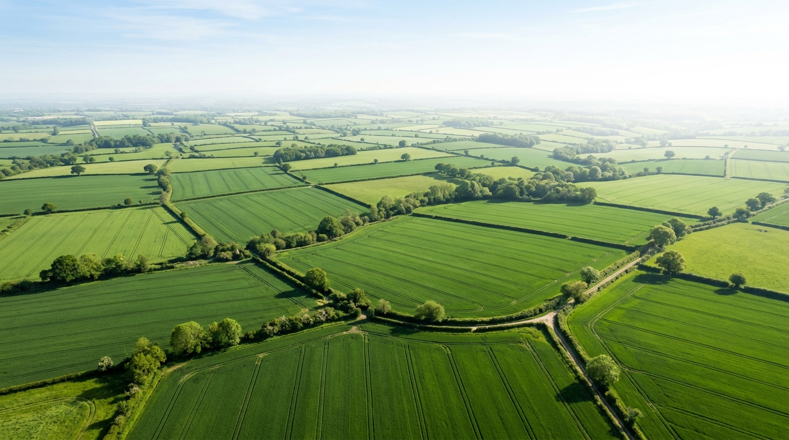

Perjalanan Menuju
Kesempurnaan.
Pelopor Pertanian Berkelanjutan. Dari Benih Hingga Panen, Kami Merawat
Kualitas Dengan Sepenuh Hati Dan Ketepatan.

Toko Hasil Tani & Sewa Alat Koperasi.
Belanja hasil panen segar langsung dari petani anggota dengan harga adil, sekaligus sewa alat mesin pertanian (Alsintan) modern untuk mendukung produktivitas lahan Anda.